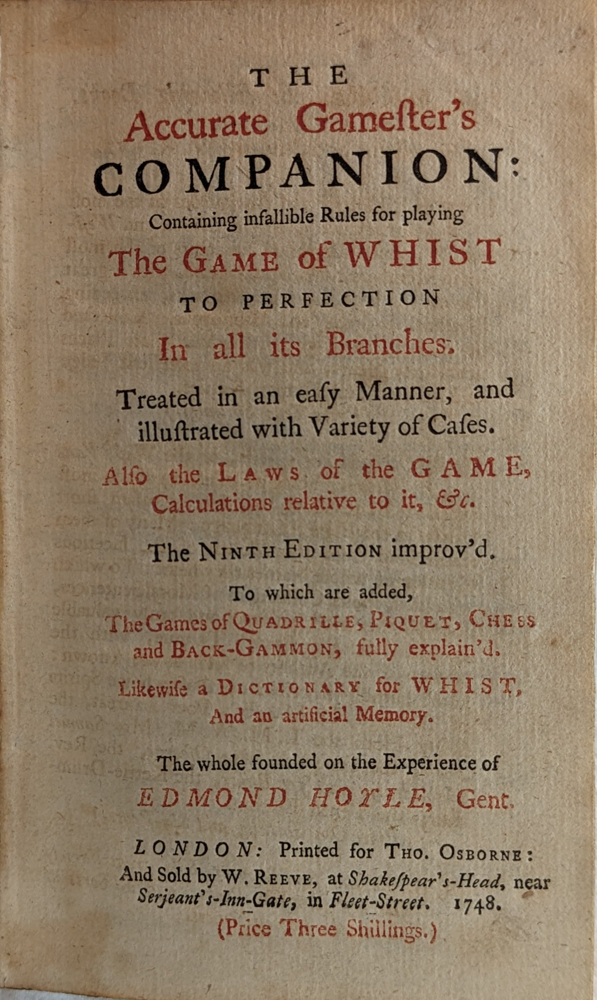

A Descriptive Bibliography of Edmond Hoyle
Copyright © 2014-26 by David Levy
(page updated 2026-01-30)User Guide
Games.1.2
The Accurate Gamester's Companion, printed for Tho. Osborne and sold by W. Reeve, first London edition, second issue, “ninth” edition, 1748.
 |
Title: | THE | Accurate Gameſter's | COMPANION: | Containing infallible Rules for playing | The Game of WHIST | TO PERFECTION | In all its Branches. | Treated in an eaſy Manner, and | illuſtrated with Variety of Caſes. | Alſo the Laws of the GAME, | Calculations relative to it, &c. | The Ninth Edition improv'd. | To which are added, | The Games of Quadrille, Piquet, Chess | and Back-Gammon, fully explain'd. | Likewiſe, a Dictionary for WHIST, | And an artificial Memory. | The whole founded on the Experience of | EDMOND HOYLE, Gent. | LONDON: Printed for Tho. Osborne: | And Sold by W. Reeve, at Shakeſpear's-Head, near | Serjeant's-Inn-Gate, in Fleet-Street. 1748. | (Price Three Shillings.) |
| Collation: | 12o: π2 [A]2(−A1) B–D12 E6 F–L12 [$½ (−B6,F1,G2,3,I5,6,L5,6) signed; signing F3 as A3, F5 as A5]; 117 leaves, pp. [6 ] [1] 2–84 [97–99] 100–123 [124–127] 128–177 [178–180] 181–224 [225–240] [=228] |
| Contents: | Signature (Page) Reference | Contents | Signature (Page) Reference | Running Titles |
| π1r | blank | |||
| π1v | Advertisement of books printed for and sold by William Reeve | |||
| π2r | title | |||
| π2v | blank | |||
| A2r–A2v | see Games.1.1 (1748) | A2r–A2v | see Games.1.1 (1748) | |
| B1r–L12v (1–240) | see Games.1.1 (1748) | B1r–L12v (1–240) | see Games.1.1 (1748) |
| Publisher: | Thomas Osborne |
| Printer: | Thomas Gardner (ornaments) |
| Notices: | 1748-11-21 General Advertiser: "This day is publish'd, in a neat pocket volume, the ninth edition, (price only 3s. in marble binding)...Mr. Hoyle's Games Complete." |
| Price: | 3s. (title, advertisement) |
| References: | ESTC T87516, Horr 672, Jessel 801, Marshall s7 no.8 p344 (1889-11-02), Rather 31 |
| Copies Seen: | BFl [I.795/HOYL (b1124953)]; L [58.b.18] (ECCO); O [Jessel f.551]; Onu [SpC CB26]; Copisarow; NvLN [GV1243.H69 1748]; OCl [789.87H F48L2]; PPL [Iu Hoyl Accu Game 1748]; TNJ [GV1241.H8 A9 c.1]; Levy [1766]; Levy [1786] |
| Other Copies: | C [7415.d.41]; AMu [OTM: OK 06-1706]; CLU-C [GV1241.H86 1748*]; CaOONL [GV1241.H6 1748 ]; CaOTY [SJG 0340]; CtY-SM [WA 19334] |
| Notes: | A reissue of Games.1.1 with a prelimary bifolium including a collected title page. There are copies preserving the original half title. |